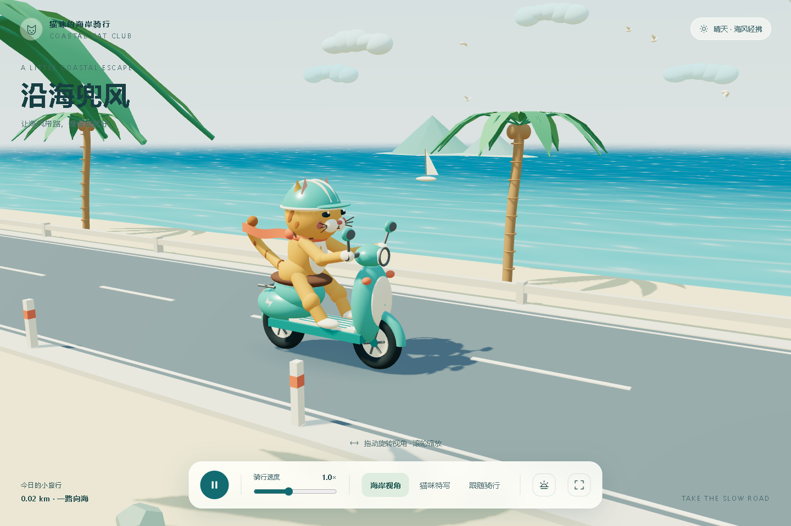
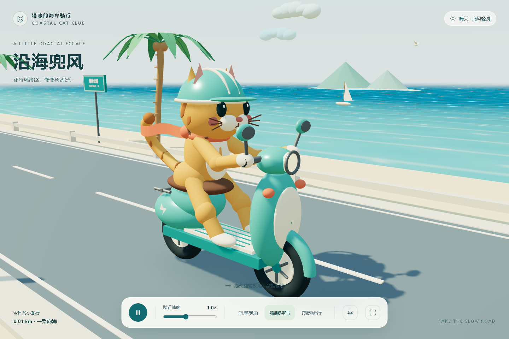
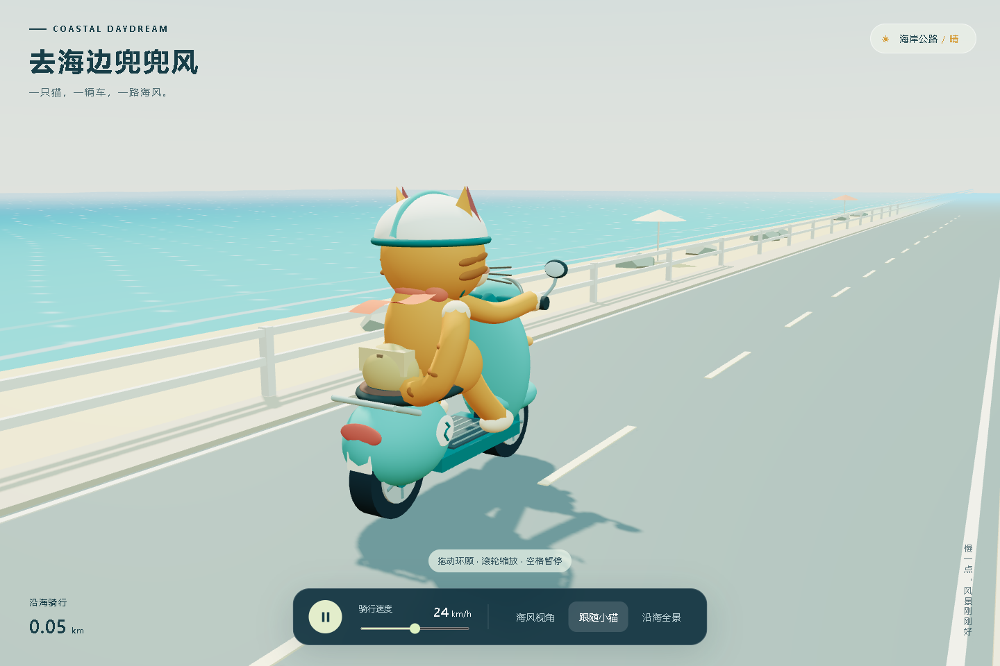
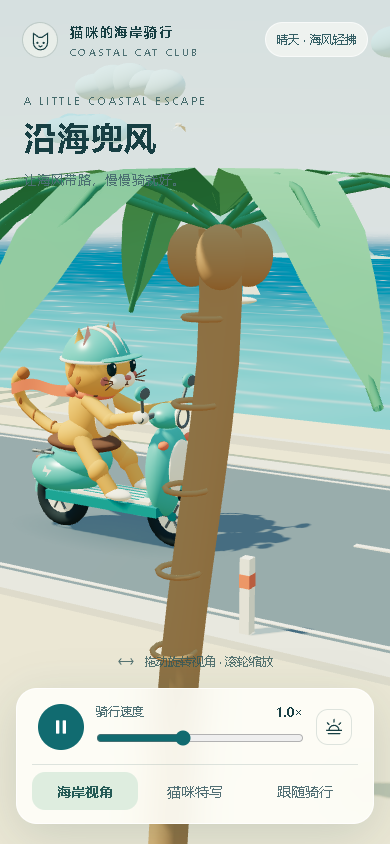
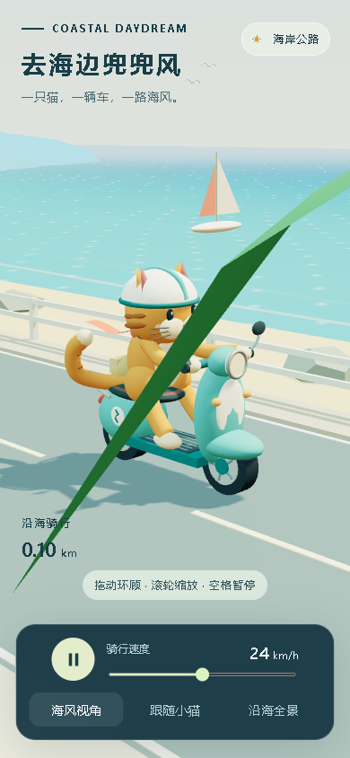
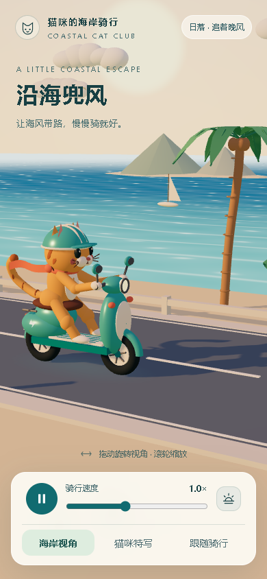

A · GPT-6.1 Sol / xhigh
本轮质量第2名
GPT-6.1 Sol 与 GPT-6 Astra，均使用 xhigh（极高）。本轮只比较两件新交付，独立于9月30日实验。
数据库记忆状态：disabled 无记忆摘要注入、无历史记忆读取 普通工具与技能保留本轮综合质量：B · GPT-6 Astra / xhigh 略优于 A · GPT-6.1 Sol / xhigh。Sol 的海面层次、日落和页面功能更丰富；Astra 的车轮关系、减少动画设置与图形中断提示更稳妥。
沿用旧报告的四项质量维度。费用和时间不参与质量排序，不发布伪精确百分制总分；镜头瞬时遮挡单列。
| 维度与判断 | A · GPT-6.1 Sol / xhigh | B · GPT-6 Astra / xhigh |
|---|---|---|
| 主体建模与细节 两者接近 | 猫脸、头盔条纹和扣带、车灯、后视镜、尾巴与脚踏细节完整。 | 面部比例清楚，奶白头盔、车体、后视镜和背包细节完整。 |
| 原场景材质、光照与环境动态 Sol 更丰富 | 海面有深浅渐层、波纹、反光和泡沫；七只鸟、云和两艘帆船有动态，另有日落切换。 | 海浪、七只鸟、云和帆船有实际运动；灯塔和柔和浅色海面构成完整环境，缺少日落切换。 |
| 动画、运动与连接逻辑 Astra 更准确 | 方向正确，暂停冻结全场景；轮胎外半径0.453，滚动公式用0.445，累计轮距偏差约1.80%。 | 方向和半径关系正确；海面、鸟、云、围巾与车轮均随暂停冻结，恢复、调速有效。 |
| 代码结构、资源处理与故障恢复 各有取舍，Astra 的异常反馈更可靠 | 共用基础几何和材质，材质42个；具有初次加载错误提示。但减少动画时仍播放，运行后图形中断的错误层被隐藏。 | 基础几何与材质按助手函数组织；默认绘制调用较少，但172个材质仍可合并。减少动画时停播，图形中断会显示刷新提示。 |
用时取原任务开始至最终回复完成，包含安装、检查、建站发布和重试。两组都主动走了Sites流程，原提示词没有要求云托管。Standard折算用于统一对比，不能当作账户账单或实际额度扣减。
| 编号 · 模型 / 推理 | 原任务实际用时 | Standard Token折算 | 模型响应 | 原交付 |
|---|---|---|---|---|
| B · GPT-6 Astra / xhigh 记忆关闭 · 本轮第1名 | 14:43 883.001 秒 | $5.2530 131.33 credits折算 | 38 | 运行原作品 下载原源码 |
| A · GPT-6.1 Sol / xhigh 记忆关闭 · 本轮第2名 | 21:46 1305.531 秒 | $0.9196 22.99 credits折算 | 42 | 运行原作品 下载原源码 |
Sol：09:12:39–09:34:25；Astra：09:18:18–09:33:01（Asia/Shanghai）。运行窗口部分重叠；共用本机与工具服务，不能把差异只归因于模型。
两组费用合计折算 $6.172593 / 154.3148 credits，仅对应原任务。
| 编号 · 模型 / 推理 | 输入总量 | 其中缓存 | 未缓存输入 | 输出总量 | 其中推理 | 合计 |
|---|---|---|---|---|---|---|
| A · GPT-6.1 Sol / xhigh | 3,981,686 | 3,879,808 | 101,878 | 32,782 | 8,549 | 4,014,468 |
| B · GPT-6 Astra / xhigh | 3,311,021 | 3,217,536 | 93,485 | 22,013 | 4,886 | 3,333,034 |
两组缓存命中约97%。缓存仍有费用；Astra的缓存单价是Sol的10倍，未缓存输入和输出价是5倍，因此Token更少也可能费用更高。本轮Astra折算费用是Sol的 5.71倍。


查看海浪、七只飞鸟、云、围巾、车轮和暂停调速。截图之外，本次已复核实际运动。





手机控制均无横向溢出；在部分时刻会有原场景的前景棕榈遮挡。该瞬时镜头现象单列，不用于综合排名。
相同原提示词：
全新创建一个可直接运行的 Three.js 网页 3D 场景：内容是一个猫在海边马路上骑电动车的3D动画
两组数据库memory_mode均为disabled，起始上下文没有记忆摘要，工具日志未见读取历史记忆、旧作品或离线制作记忆技能。保留了普通工具与Sites技能；这不等于清空全部技能或隔离整台机器。
两组都主动采用Sites建站、源码同步和发布流程；原提示词没有要求云托管。这些工作与失败重试包含在原任务实际耗时中。
两个交付使用Three.js r180。正常运行检查采用Chrome 154.0.8037.92、1440×960桌面视口与390×844手机模拟视口；本次检查用量不计入原任务。
质量从完整源码、原默认及其他镜头、海浪/飞鸟/围巾的运动、车轮关系、暂停恢复、调速、拖动缩放、减少动画与图形中断反馈共同判断。需要访问内部对象的检查只增加私有观测接口，没有修复或改写公开作品。
记忆与流程核查 · 运行与动态检查 · GitHub本轮目录
历史实验单独保留：9月30日十组作品。